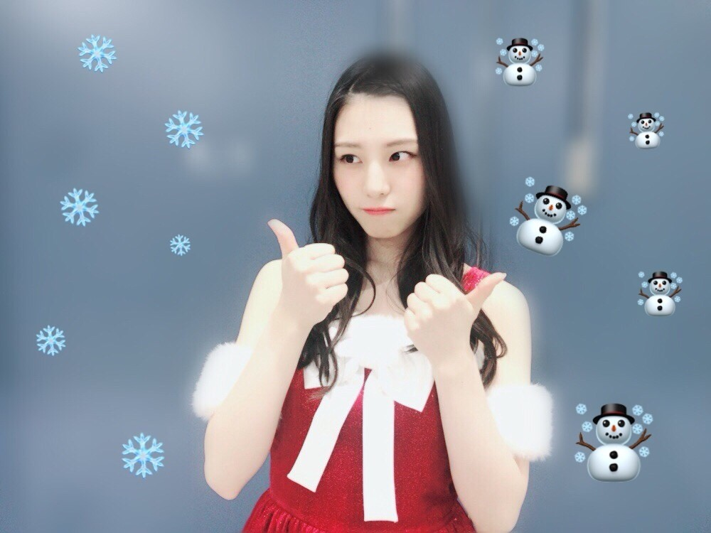
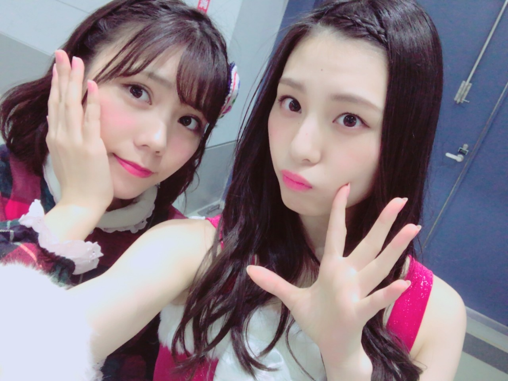
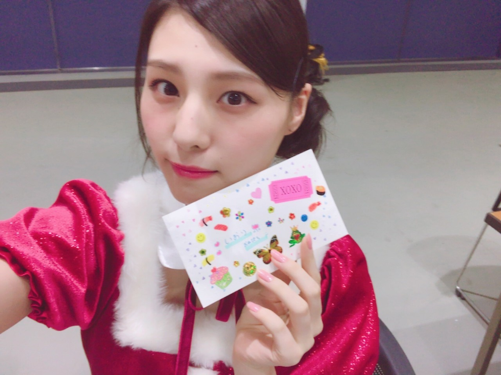
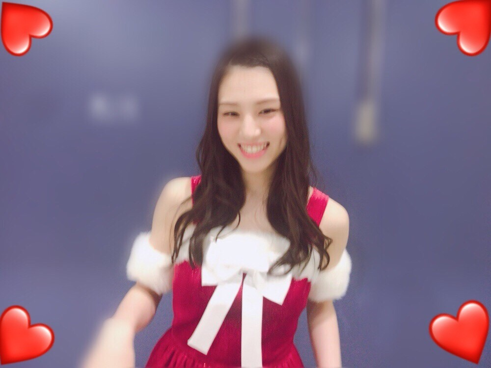
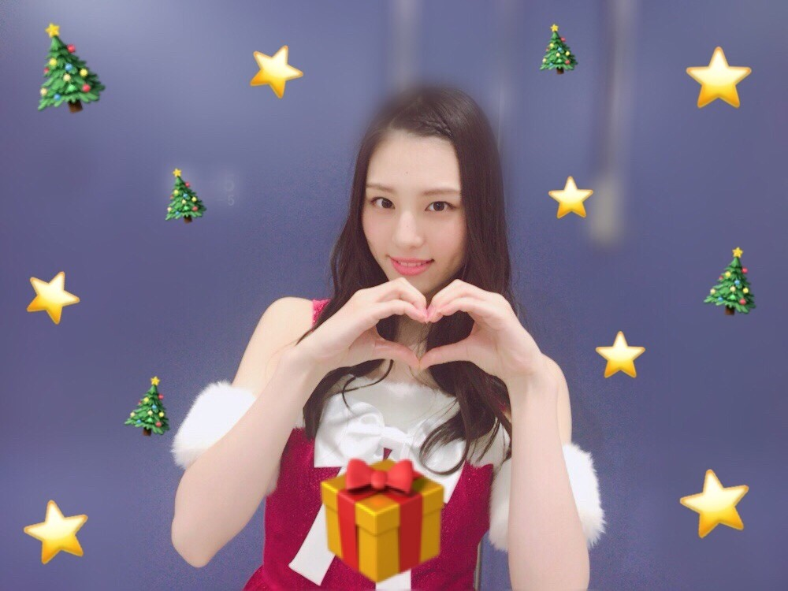

| 2017/12 27 Wed | -0.5℃ _(．．*)vol.216 |
皆さんこんにちは
相楽伊織です

仙台で今年最後の握手会でした！
わざわざ遠くまで足を運んでくださった方も
本当に沢山いてありがとうございました(_ _)
仙台での握手会は初めてでしたね～
雪積もってなかった！
東北はどこも雪景色だとばかり思ってたけど
そんな事ないんだね！笑
そしてこの日の4部終わりに
生誕祭を開いていただきました！
ありがとうございます(_ _)
すごく手の込んだレーンの装飾だったり
入退場曲も私のことを思って
考えてくれているのがとてもとても伝わって
胸がいっぱいです。
お手紙はひなぴょんに読んでもらえた♡
大好きなひなぴょん♡
これからも仲良くよろしくね♡

お手紙も
めっちゃ可愛くデコレーションしてくれてた♡

大切にする♡
すごく素敵な生誕祭だったんですけど
スピーチで何言っていいか分からなくて
何も言葉が浮かんでこなくて
パニックみたいになっちゃって。。(^^;
何も言えなくて本当に本当にごめんなさい。
それを｢そういうキャラだし全然大丈夫だよ～｣
ってファンの方に言われたけど
終わってからずっと
なんでいつもそうなっちゃうんだろうって
感謝の気持ちも何も言えなかったから
すごく後悔しました。。(´･ω･`)
すみませんでした。
でもみなさんの気持ちはありがたいし、
とても大切な存在なのは本当です。
20歳はこういう所を
なおしていけるよう頑張りたいと思います。
これからも
応援よろしくお願いします(;_;)(;_;)


i o r i .

コメント(404)
2017/12/27 09:30